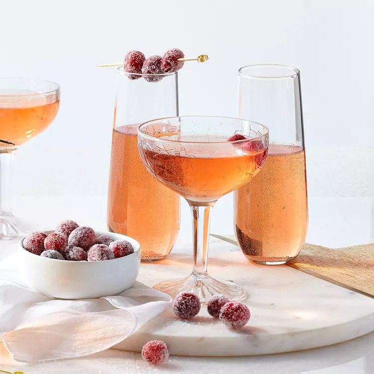

Poinsettias

This is a nice holiday cocktail. We always serve this at our Christmas Eve open house. It has such a nice taste!!
Ingredients:
- 4 ounces brut Champagne
- 1 ½ tablespoons cranberry juice
Steps:
- Pour champagne into a champagne flute.
- Top with cranberry juice.
Return to top